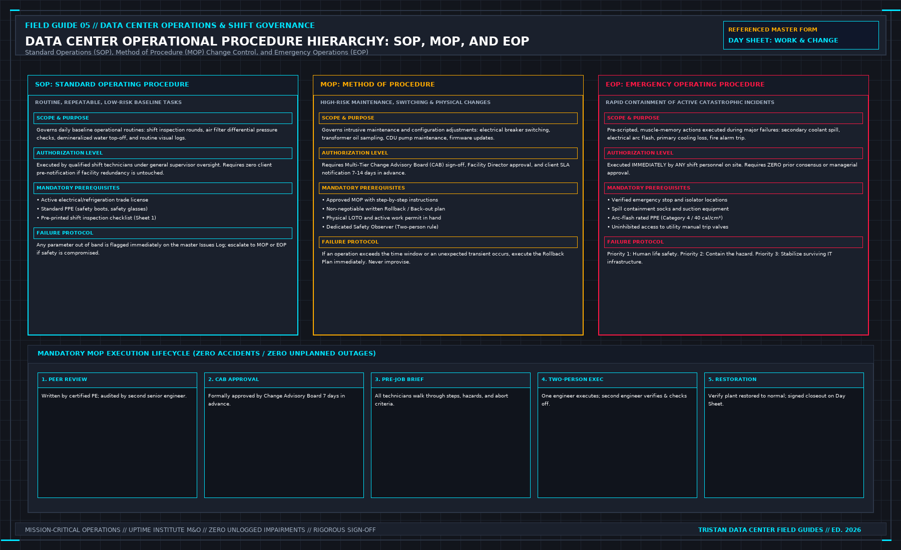

What an SOP is allowed to contain: First-Principles Data Center Engineering Protocol
Direct Answer Block: What a data center Standard Operating Procedure (SOP) is permitted to contain—and why invasive breaker switching or setpoint changes must never hide inside an SOP. In mission-critical data center commissioning and operations, engineers enforce this boundary using deterministic physical equations, calibrated field instrumentation, and auditable sign-off gates rather than relying on vendor brochure summaries, uncalibrated software plots, or verbal assurances. Every measurement and state transition must be recorded with synchronized UTC timestamps and explicit pass/fail thresholds before a signature is granted.

A standing procedure is the normal job. The round. The lamp test. The check that a valve is where the last job left it. It is not a project, and it is not a repair you hope to repeat often enough to call routine.
It names who may do it. A team name is not a person on a night when the team is one name short. It names the limit that stops the task: the reading, the state, or the missing spare at which you do not continue. A procedure with no stop is a list of motions. Motions continue into the fault.
It names the record. What is written down, where, and what a blank means. A blank that everyone treats as "normal" is a missing observation. Say so on the paper, or the blank will be inherited as a pass.
It does not contain a one-time isolation, a back-out, or a service impact for a change. Those belong on a method. If the standing paper has grown a section called "when we swap the unit," split it. The swap is a method. Leaving it inside the SOP is how an unapproved change looks like Tuesday.
The paper has to be findable at the point of work. A share drive that only the author can open is not issued. Issue means the person doing the round can read the stop without a search.
Do not paste a vendor's routine into the header and call it adopted. Their steps may be wrong for your valves. Write the steps your plant requires. Cite a title if a contract already names one. Do not copy the annex.
1. First-Principles Engineering Formulation and Governing Mathematics
In high-density data center environments, verbal summaries and qualitative status tiles routinely obscure incipient physical failures. Whether auditing a 120 kW liquid-cooled rack boundary, evaluating a 1-second telemetry time series, or verifying plant redundancy prior to handover, the governing physical relationship for this protocol is expressed as:
When any term on the left-hand or right-hand side of this relationship is left unmeasured, inferred from an uncalibrated nameplate, or averaged across an unverified time window, the resulting engineering record cannot support a valid operational signature. Field engineers must verify each physical variable independently using NIST/ISO 17025 traceable instruments before proceeding to the next gate in the sequence.
| Audit Verification Parameter | Unacceptable / Defective Field Practice | Auditable First-Principles Requirement | Mandatory Action on Failure |
|---|---|---|---|
| Primary Boundary Definition | Implied by vendor brochure or slide deck | Explicitly bounded on stamped P&ID / SLD with tag IDs | Halt acceptance; issue formal boundary clarification |
| Measurement & Telemetry Proof | Single uncalibrated display reading or 60-sec average | Calibrated Class A/0.5S sensor with 1-sec UTC timestamp | Reject dataset; classify point as 0x40 Stale or 0x80 Bad |
| Pass / Fail Acceptance Gate | Qualitative "Looks OK" or "Within Normal Range" | Quantitative numerical corridor cited from revision in force | Log Category A/B defect; withhold retainage or permit |
| Custody & Sign-Off Record | Single bundled "Accepted" signature at end of meeting | Scoped, dated sentence naming exact proved & unproved lines | Strike unsupported claims; issue Conditional Refusal |
2. Deep-Dive Technical Protocol and Field Implementation
The following field protocol—adapted directly from Volume 05: Run the Data Center Day: What the Manager Must Sign Before the Shift Ends—establishes the step-by-step verification mechanics required on the data hall floor:
Telemetry dashboards lie. A Building Management System (BMS) pressure transducer can drift out of calibration; an optical smoke detector can accumulate dust and report clear; an RTD temperature sensor can fail high and be clamped by a bad software filter.
The physical shift round is the ultimate verification that the physical reality of the data center matches the mathematical model in the control room.
| SHIFT ROUND PHYSICAL INSPECTION TOPOLOGY |
|---|
| [STATION 1] MV Substation & Switchgear (35kV/10kV Gas, Springs, Relays) |
| ↓ |
| [STATION 2] Transformer Vaults (Winding Temps, Acoustic Hum, Lugs) |
| ↓ |
| [STATION 3] UPS & Battery Rooms (DC Float Voltage, String Temps, Exhaust) |
| ↓ |
| [STATION 4] Central Chiller Plant (Approach Temp, Oil Pressure, Head Press) |
| ↓ |
| [STATION 5] Liquid CDU Stations (0.15-0.90 MPa, Refractometer, Catch Pan) |
| ↓ |
| [STATION 6] AI Whitespace & NVL72 Racks (Thermal IR, Delta-P, FD83 Couplings) |
A technician walking the round is not an errand runner checking boxes on a clipboard. A technician on the round is an active, multi-sensory diagnostic instrument.
The Multi-Sensory Inspection Discipline
Every square meter of a production data center must be audited across four sensory channels:
- Visual: Inspect equipment for fluid drips, staining, discoloration, rust, loose fasteners, bulging capacitors, blistered paint indicating extreme heat, and verify mechanical analog gauge needles against digital telemetry readings.
- Acoustic: Listen for cavitation in pump volutes (sounds like pumping gravel), harmonic buzzing in transformers indicating loose laminations or core saturation, bearing squeal in fan motors, and whistling air leaks around aisle containment doors.
- Thermal: Use calibrated handheld infrared (IR) cameras to sweep electrical busbar connections, circuit breaker terminals, cable lugs, and mechanical bearings. Any connection exhibiting a temperature > 70°C or a phase-to-phase differential ΔT > 10 K is an immediate Category 1 defect.
- Olfactory: Sniff for the sharp, pungent scent of burning electrical insulation (ozone and overheated phenolic resin), the sweet odor of atomized propylene glycol from a micro-leak, or the sulfurous stench of an off-gassing lead-acid battery.
The Six Critical Inspection Stations
Following the operational standards outlined in OpenViking (ALZJ-YW-2.6XZ02 for IT Whitespace and ALZJ-YW-2.6XZ10 for Liquid Cooling Infrastructure), the shift inspection round traverses six mandatory stations:
CRITICAL STATION INSPECTION METRICS
| Station / System Standar | d Parameter Rejection Thr | eshold |
|---|---|---|
| MV Switchgear SF6 Gas Pr | essure Nominal Low Pressu | re Alarm Trip |
| Transformers Winding Tem | p < 90°C Temp >= 110°C (A | larm) |
| UPS Battery Rooms Ambien | t Temp 20°C - 25°C Temp > | 28°C / Swelling |
| Chiller Plant Condenser | Approach <1.5K Approach > | = 2.5 K |
| CDU Secondary Loop Press | ure 0.15 - 0.90 MPa Press | ure < 0.12 MPa |
| CDU Glycol Mix 25.0% PG | (+/- 1.0%) PG < 23% or > | 27% |
| IT Whitespace Aisles Und | erfloor DP >= 5.0 Pa DP < | 2.5 Pa (Air Starve) |
| Liquid Racks (NVL72) FD8 | 3/UQD Couplings Dry Any A | ctive Fluid Droplet |
Station 1: Medium-Voltage Substation & Switchgear
- Inspect 35kV and 10kV circuit breaker spring charge indicators (verify charged state).
- Check SF6 gas pressure indicators on gas-insulated switchgear (GIS); ensure needles sit securely in the green zone.
- Verify DC control bus battery charger voltage (125 VDC ± 2%) and ensure zero ground-fault alarms exist on the ungrounded DC control system.
Station 2: Transformer Vaults
- Verify digital winding temperature indicators on dry-type transformers (normal operating range: 60°C - 85°C; alarm threshold at 110°C; automatic trip at 130°C).
- Inspect forced-air cooling fans for physical obstruction and bearing vibration.
- Check oil-filled transformers for tank oil level, silica gel desiccant color (deep blue; pink indicates moisture saturation requiring immediate replacement), and inspect tank seams for weeping oil.
Station 3: UPS & Battery Rooms
- Record DC bus float voltages and battery charging currents across all static UPS modules.
- Audit battery room ambient temperature (maintain strictly between 20°C and 25°C; lead-acid battery design life degrades by 50% for every 8 K rise above 25°C).
- Visually inspect individual VRLA battery jars for case bulging, terminal post corrosion, or electrolyte leaking; for lithium-ion systems, verify that the Battery Management System (BMS) reports zero cell voltage imbalances (> 50 mV).
- Confirm hydrogen exhaust fan operation by feeling airflow at the intake louvers.
Station 4: Central Chiller & Pumping Plant
- Audit chiller operating logs: verify that condenser water approach temperature is ≤ 1.5 K (ΔT_approach = T_cond, leaving - T_tower, entering). An approach temperature > 2.5 K indicates severe tube fouling or scaling requiring chemical brushing.
- Check compressor oil levels, oil pressures, and oil return temperatures.
- Audit chilled water pump differential pressures (ΔP) and verify that secondary variable speed drives are modulating correctly without hunting.
Station 5: Secondary Cooling Distribution Units (CDU)
Per OpenViking ALZJ-YW-2.6XZ10, the CDU is the mechanical heart of high-density AI clusters:
- Pressure Envelope: Verify primary facility water system (FWS) supply pressure and secondary technology cooling system (TCS) supply pressure remain strictly between 0.15 MPa and 0.90 MPa. Verify that pump differential pressure is < 1.0 bar.
- Thermal Performance: Verify that plate heat exchanger approach temperature (ΔT_approach = T_TCS, supply - T_FWS, supply) does not exceed 8.0 K. An approach > 8.0 K indicates biological fouling or particulate clogging on the plate surfaces.
- Fluid Chemistry: Use a calibrated optical refractometer to test secondary coolant. Propylene glycol concentration must measure precisely 25.0% by weight (± 1.0%), providing freeze protection down to -11.5°C and burst protection down to -22.0°C. Coolant conductivity must measure < 10 μ S/ cm, with pH maintained between 7.5 and 9.0.
- Physical Integrity: Inspect the internal CDU catch pan and base frame for moisture. Verify that the continuous rope leak detection sensor is completely dry and properly positioned. Check the nitrogen pre-charge pressure on the thermal expansion tank (P_0 = P_fill - 0.2 bar).
Station 6: AI Whitespace & NVL72 Racks
Per OpenViking ALZJ-YW-2.6XZ02:
- Electrical Distribution: Inspect remote power panels (RPPs) and power distribution units (PDUs). Sweep circuit breakers and terminal lugs with an infrared camera to detect loose terminations.
- Airflow Containment: Audit cold aisle containment (CAC) or hot aisle containment (HAC). Verify that differential pressure across the raised floor or containment barrier remains ≥ 5.0 Pa. Verify that all unpopulated rack units contain blanking panels; a single missing 1U panel permits 25 L/s of air bypass, creating localized hot spots.
- Liquid Cooling Manifolds & Couplings: Audit rack-level vertical distribution manifolds. Inspect all quick-disconnect couplings (Danfoss FD83 or Universal Quick Disconnects) serving compute trays and NVLink switch trays. Any sign of fluid weeping, crusting, or drop formation is an immediate Stop Work condition requiring tray isolation. Check that drip trays under the rack manifolds are clean and dry.
The Immediate Defect Entry Rule
If you discover a defect during the shift round, it must be entered into the site computerized maintenance management system (CMMS) or physical defect register before you leave the room.
Taking a photograph on a personal mobile phone with the intention of logging the issue at the end of the shift is unacceptable:
- A defect entered into the register has a physical timestamp, an asset ID, a priority classification, and an assigned owner.
- A photograph on a smartphone is an unmanaged private note that is forgotten when an alarm sounds thirty minutes later.
If the defect impairs equipment redundancy or causes operating parameters to cross an SLA threshold, the shift round halts immediately, the duty manager is notified via radio, and an incident ticket is generated on the spot. Never complete the round and casually mention a leaking CDU pump during lunch.
Decisions to Record
- Physical inspection route completed, with start and completion timestamps and technician signatures.
- Specific operating parameters logged at all six inspection stations.
- Handheld refractometer, conductivity, and pH measurements logged for the secondary cooling loop.
- All defects entered into the formal site register prior to exiting each room, or an explicit statement of zero defects found.
Quantitative Field Metrology Across the Six Physical Inspection Stations
To ensure the 6-Station Shift Walking Round detects incipient mechanical and electrical degradation days before a hardware trip occurs, technicians carry three calibrated pocket instruments on every round: a Spot Thermal Imaging Camera (-20^\circC to +250^\circC), an Ultrasonic Acoustic Leak/Corona Detector, and a True-RMS Clamp/Multimeter (for low-voltage/ground checks).
| Walking Station | Quantitative Local Gauge / Physical Check | Normal Operational Corridor | Immediate Action / Escalation Threshold |
|---|---|---|---|
| Station 1: MV Switchgear | SF6 gas pressure gauge; partial discharge ultrasonic dB; relay flags | PSF6 ≥ 0.13 MPa(g); ultrasonic < 10 dBμV | Any audible corona hiss or low SF6 alarm ⇒ Evacuate room & call HV lead |
| Station 2: Transformers & UPS | Dry-type winding RTD (Tmax); DC bus capacitor ripple voltage | Winding T ≤ 115^\circC (Class H); DC ripple ≤ 1.0% VDC | Winding Δ T phase-to-phase > 15 K or swollen capacitor can ⇒ Bypass prep |
| Station 3: Battery Rooms | Float current per string (Ifloat); pilot cell IR thermal check; H2 gas | Ifloat ≤ 1.5 A / 1000 Ah; cell Δ T ≤ +3.0 K over ambient; H2 < 0.5% | Any jar > +5.0 K above ambient indicates thermal runaway ⇒ Open string breaker |
| Station 4: Chiller & Pump Plant | Chiller approach (Δ Tapp = Tcond, sat - TCW, leave); strainer Δ P | Δ Tapp ≤ 1.8 K; suction strainer Δ P ≤ 25 kPa | Strainer Δ P > 45 kPa or pump seal weep > 5 drops/min ⇒ Swap standby pump |
| Station 5: Whitespace CDUs | Secondary PG25 reservoir level; filter Δ P; Danfoss FD83 dry-break check | Reservoir 60--85%; 50 μm filter Δ P ≤ 30 kPa; zero glycol odor | Reservoir drop > 2 L/shift indicates hidden micro-leak ⇒ Walk all rack manifolds |
| Station 6: Server Aisles | Containment differential Δ PCAC; top-of-rack (1.8 m) intake T | Δ PCAC ∈ [+1.5, +5.0 Pa]; T1.8m ≤ 27.0^\circC | Negative aisle Δ P or T1.8m > 28.5^\circC ⇒ Audit CRAH state & blanking panels |
3. Field Verification Checklist and Instrumentation Hygiene
To execute this protocol without introducing measurement bias or scope ambiguity, the responsible engineer enforces four mandatory field rules:
- Instrument Traceability Before Observation: Verify that every thermometer (4-wire Pt100 RTD Class A), pressure transducer (≤ ± 0.1% span), flowmeter, balometer, or power analyzer carries a current calibration certificate and passes a pre-test zero/span check on the day of the walk.
- Synchronized Time-Series Capture: Align all digital loggers and gateway pollers to a single UTC reference clock (via IEEE 1588v2 PTP at ± 1 ms for electrical Sequence of Events, or NTP at ± 10 ms for thermal/hydraulic dwells). Never merge unsynchronized CSV files by row index.
- Explicit Isolation of Disturbances vs. Control Handles: Hold upstream supply temperatures, parallel cabinet loads, and containment door states constant during the observation dwell so that transient plant drift is never mistaken for steady-state equipment performance.
- Written Record Prior to Signature: Record every boundary tag, measured value, uncertainty tolerance, and open limitation in ink on the controlled project sheet before leaving the equipment line-up.
Frequently Asked Questions (FAQ)
Why does "What an SOP is allowed to contain" matter during high-density data center commissioning and operations?
What a data center Standard Operating Procedure (SOP) is permitted to contain—and why invasive breaker switching or setpoint changes must never hide inside an SOP. When project teams bypass this rule to meet a commercial schedule milestone, unverified physical assumptions—such as hidden hydraulic pressure drops, unlogged polling gaps, unblanked bypass leakage, or uncalibrated sensor offsets—transfer directly into live 24/7 production as latent single points of failure.
How do you quantitatively verify compliance with "data center standard operating procedure SOP shift rounds" on the physical floor?
Compliance is verified by executing the governing mathematical balance (| Vlocalgauge - VBMSscreen | ≤ \varepsilonclass (Verified across 6 Shift Stations)) using independent, calibrated field instruments across a stabilized steady-state dwell window (minimum 15 to 30 minutes for thermal and hydraulic systems), and confirming that the discrepancy between primary and secondary measurements remains strictly within the pre-declared acceptance band.
What should an engineer do if a contractor or vendor submits a report that violates this protocol?
The reviewing engineer must refuse to sign the broad acceptance sentence, mark the specific line item as Unproved / Defective on the official audit sheet, and either require a witnessed re-test under a corrected script or isolate the unproved scope under a time-bounded Conditional Acceptance with a 150% to 200% financial retainage escrow holdback.
From Run the Data Center Day: What the Manager Must Sign Before the Shift Ends, Tristan, Data Center Field Guides.